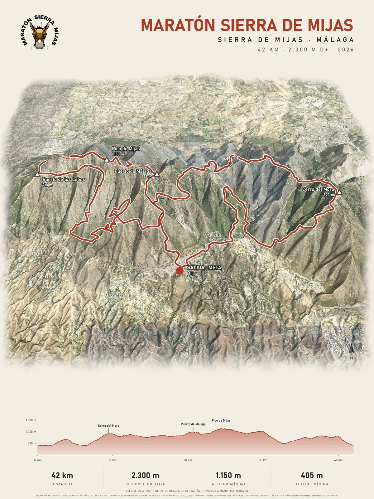
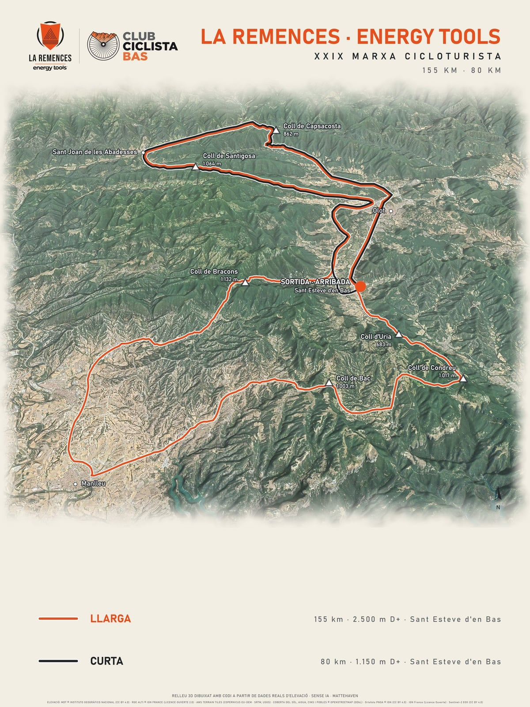
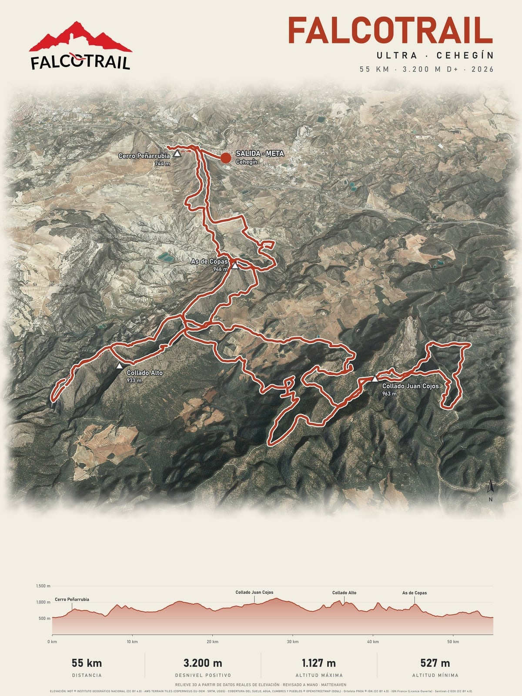
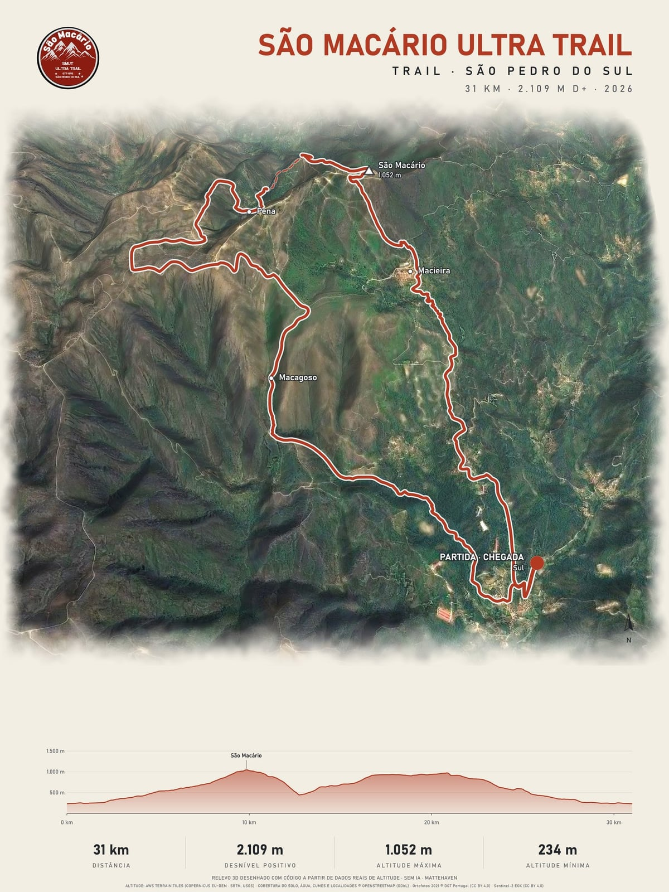
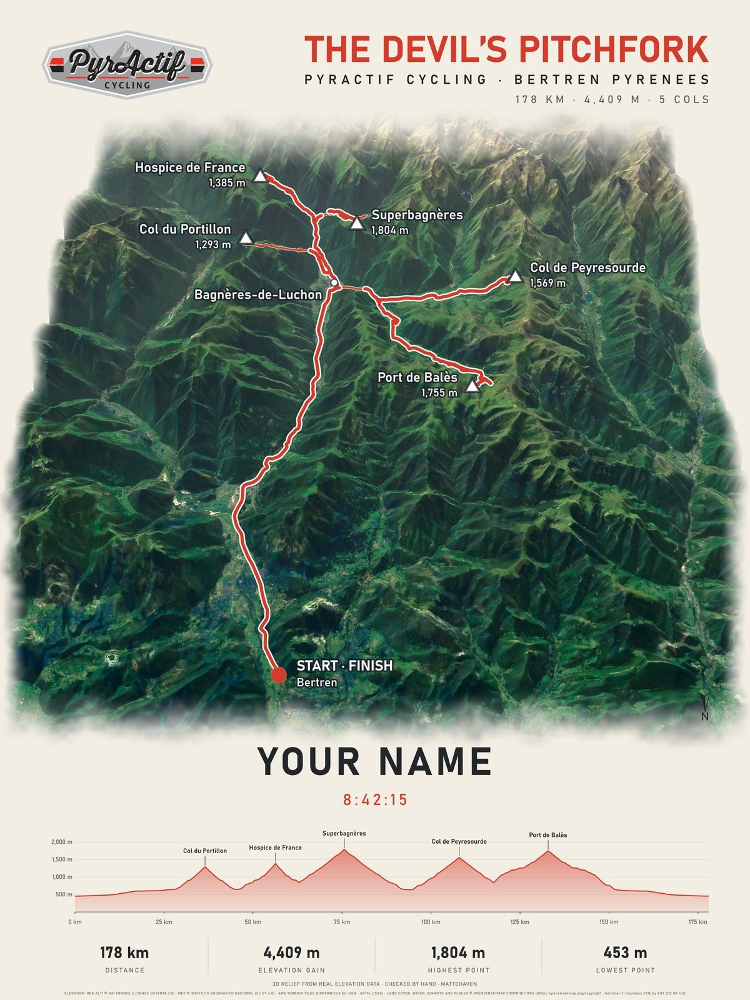
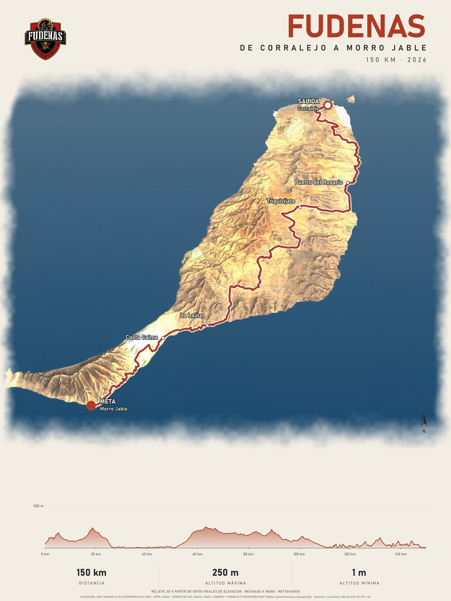

Para organizadores de carreras
La lámina oficial de finisher de vuestra carrera. Sin coste para la organización.
Dibujamos vuestro recorrido en 3D sobre el relieve real, con vuestro logo, y cada corredor la pide con su nombre y su tiempo. Nosotros la revisamos a mano, la imprimimos y se la mandamos a casa. Vosotros solo mandáis un correo a vuestros finishers.

Carreras que ya la tienen
Trail y ciclismo, en España, Portugal y el Pirineo francés. En cada página, cualquiera escribe su nombre y su tiempo y ve su lámina antes de pedirla.









Cómo funciona
Lo que más vende es el correo a los finishers en los días siguientes a la carrera, cuando la meta está reciente. Por eso lo dejamos todo preparado.
Vuestra versión en 48 horas
Con vuestro logo, vuestros colores y el track oficial de cada distancia. Sin compromiso: si no os convence, no pasa nada.
Un correo a los finishers
Os damos el texto escrito, el enlace a la página donde cada uno ve la suya, y una publicación, una historia y un vídeo para redes.
Del resto nos encargamos
Revisamos cada lámina a mano con la clasificación oficial, la imprimimos cerca de cada corredor, la enviamos y atendemos cualquier duda.
39 €lámina de 30 × 40 cm
69 €enmarcada, lista para colgar
19 €archivo digital en 24 horas
Envíoincluido
Lo que gana vuestra carrera
Ni pagáis nada ni gestionáis pedidos. Y cada lámina deja algo para el club.
- 8 € por cada lámina enmarcada, 4 € por cada lámina sin marco y 2 € por cada archivo digital.
- Cada mes, la lista de pedidos de vuestra carrera y vuestra parte.
- No nos pasáis datos de nadie: cada corredor pide la suya en la tienda, y la clasificación la miramos en la web oficial.
- Si una lámina llega con un error o dañada, la rehacemos gratis. El corredor no tiene que reclamaros nada a vosotros.
Preguntas que nos hacen
¿Quién hay detrás? Antonio, desde Madrid. Me gustan la montaña, las carreras y el campo, y creo que llegar a meta merece algo más que una medalla en un cajón. Cada lámina la reviso yo antes de imprimirla.
¿De dónde sale el relieve? De datos reales: los modelos de elevación del IGN y de Copernicus, fotos aéreas y de satélite, y el track oficial de la carrera. Los picos, los pueblos, la salida y la meta van rotulados en el mapa.
¿Sirve para ciclismo? Sí: marchas, puertos y rutas, como La Remences, la Ancares Cycling Marathon o The Devil's Pitchfork de PyrActif.
¿Y si la carrera fue hace meses? También vale, sobre todo como regalo de Navidad. Pero el mejor momento es la semana de después: si nos escribís antes, la tenemos lista para ese correo.
¿A dónde se envía? Se imprime cerca de cada corredor: España, Portugal, el resto de Europa, Reino Unido, Estados Unidos, Canadá y Australia. A Canarias llega el digital en 24 horas y la impresa tarda más.
¿Cómo empezamos? Contestad al correo que os mandamos, o escribidnos por la tienda de Etsy, con el nombre de la carrera. En 48 horas tenéis vuestra versión.